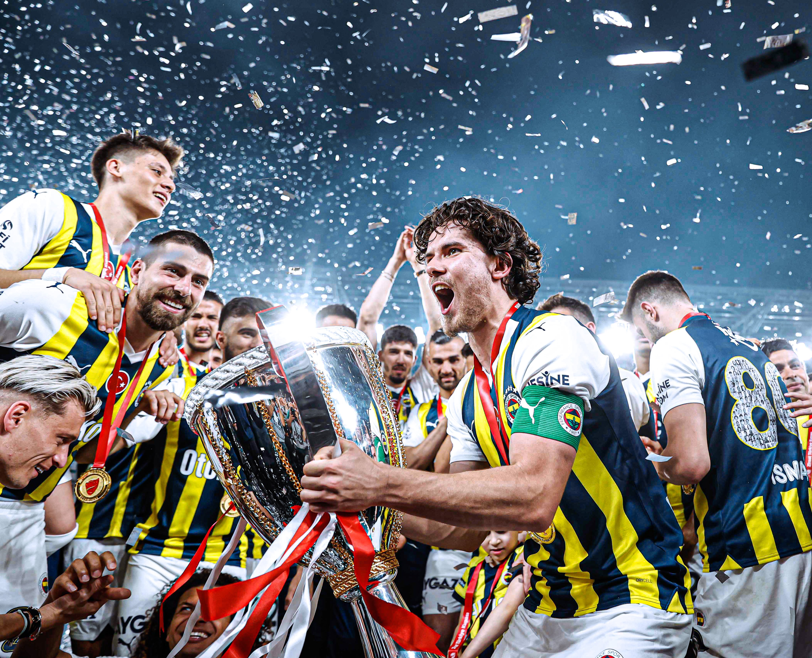

Köklü bir tarihin mirasçısı olan Fenerbahçe, 1907'den bu yana Türk futbolunun sembolü olmaya devam ediyor. Tutkuyla örülmüş bu yolculukta milyonlarca taraftar, tek yürek tek ses.

1907 yılında İstanbul'un kalbinde kurulan Fenerbahçe, yalnızca bir futbol kulübü değil; bir milletin tutku, onur ve dayanışma sembolüdür. Her nesil, sarı-lacivert formanın altında aynı ateşi taşımış; bu köklü gelenek bugün de milyonlarca taraftarın yüreğinde yaşamaya devam ediyor.
Fenerbahçe tarihinin en büyük yabancı futbolcusu olarak kabul edilen Alex de Souza, sarı-lacivertli formayı 8 yıl boyunca giydirdi.
Brezilya'nın Minas Gerais eyaletinden çıkan bu dehayı dünyaya tanıtan Fenerbahçe oldu. Serbest vuruş ustalığı, yaratıcı pasları ve liderliğiyle taraftarların kalbine taht kurdu.
Fenerbahçe'nin 3 şampiyonluğunda kilit rol oynayan Alex, 2007'de Türkiye'nin en iyi futbolcusu seçildi. Kulübün efsaneler galerisinde hâlâ en parlak isim olarak yer alıyor.